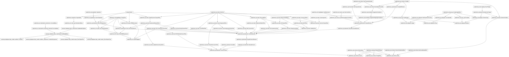
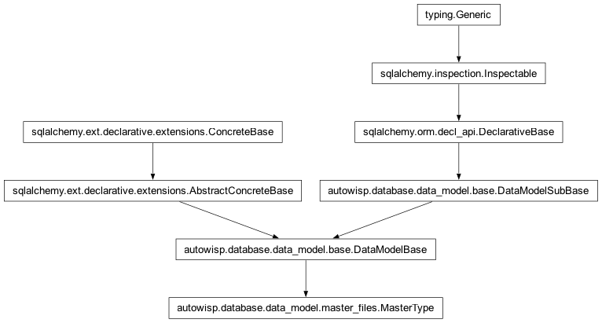

autowisp.database.data_model.master_files module
Class Inheritance Diagram

Define the MasterFiles table for the pipeline.
- class autowisp.database.data_model.master_files.MasterFile(**kwargs)[source]
Bases:
DataModelBase
The table tracking master files generated and used by the pipeline.
- enabled
Can this master be used for calibrations?
- filename
The full path of the master file.
- id
A unique identifier for each row.
- master_type
- progress_id
The ImageProcessingProgress or LightCurveProcessingProgress that generated this master, if any.
- timestamp
When record was last changed
- type_id
The type of master file.
- use_smallest
Use the master of this type for which this expression evaluated against image header gives the smallest value
- class autowisp.database.data_model.master_files.MasterType(**kwargs)[source]
Bases:
DataModelBase
The table tracking the types of master files used by the pipeline.
- condition_id
The collection of expression involving header keywords that must match between an image and a master for a master to be useable for calibrating that image.
- description
A description of the master file type.
- id
A unique identifier for each row.
- maker_image_split_condition_id
The collection of expression involving header keywords that must match between all images that are combined into a master in addition to the expressions specified by
condition_id.
- maker_image_type_id
The image type to which the maker step is applied when creating masters of this type.
- maker_step_id
The step which produces this type of master frames.
- master_files
- match_expressions: Mapped[List[ConditionExpression]]
- name
The name of the master file type.
- split_expressions: Mapped[List[ConditionExpression]]
- timestamp
When record was last changed